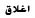

قتيلان ومئات الجرحى بيوم دام باليمن
مرسوم لإنهاء الطوارئ وقتلى بحمص
معارك بمصراتة وقصف طرابلس
اليمن على طاولة مجلس الأمن
مبارك المتهم الأول بقتل المتظاهرين
مقتل مطلوبين بقضية أريغوني في غزة
الدولة الديمقراطية قبل المدنية أو الدينية
ثورة عربية رغم التحديات